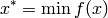
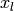
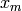
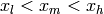
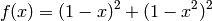
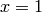

Linear Optimization of a Single Variable¶
The optimization problem for a function of a single variable can be put as the
following: finding the  in a function
in a function  that wields the
function’s smallest value. Mathematically, it is usually put as
that wields the
function’s smallest value. Mathematically, it is usually put as

There are numerous different methods to find the optimal value of . In
general, these methods consist in getting a first estimate  of the
location of the minimum and adding to it or subtracting from it an update step.
The algorithms diverge in how the update step is computed. Here is a brief
description of some of the methods implemented in Peach:
of the
location of the minimum and adding to it or subtracting from it an update step.
The algorithms diverge in how the update step is computed. Here is a brief
description of some of the methods implemented in Peach:
- Direct
- The update step is a fixed value. If the updated estimate results in the growth of the value of the function, it means that the estimate is getting farther from the minimum. Thus, the sign of the step is inverted, and its magnitude is halved. This method, in general, is not very efficient, but can be used in situations where other methods won’t perform well (for example, if the function has discontinuities).
- Interpolation
- In the interpolation search, the estimate is given in the form of three points, ,  and
, such that . A parabolic function passing through these points is then computed, because in a parabolic function, it is very easy to compute the location of the minimum. If the minimum of the parabolic approximation is not good enough, a new set of estimates is then computed and fed to the algorithm.
- Golden Rule
- In the golden rule search, the estimate is given in the form of the lower and upper limits of an interval where the minimum is located. This interval is partitioned in three sub-intervals using the golden ratio as the proportion of its sizes, and a new estimate is computed by finding in which sub-interval it is.
- Fibonacci
- The Fibonacci search is identical to the golden rule search, except that the golden ratio is not explicitly given. Instead, it is approximated by the ratio of numbers in the Fibonacci sequence. This, in general, gives worst results than the golden rule search, but it might be needed in environments where floating point numbers are not available.
The efficiency of optimization methods are evaluated using benchmark functions. There are lots of functions of this type, but, in general, these functions have local minima and are difficult to minimize. One such function is the Rosenbrock function, which one-dimensional version is given below:

This function, actually, is a simplified version – the actual Rosenbrock function adds some multiplying constants that make the slopes even smaller, making it very difficult to find the minimum. The minimum can be found analitically (by derivatives) to be . We will proceed with the steps to optimize this function with the direct search optimizer.
As always, we first import numpy for arrays and peach for the library. Actually, peach also the numpy module, but we want it in a separate namespace:
from numpy import *
import peach as p
Let’s define the function to be optimized. By using Peach, you can pass to an optimizer any function that receives a floating point number and returns a number. The function will be called by the optimizer, so you must ensure that it can deal with the parameter and return an appropriate result:
def f(x):
return (1 - x)**2 + (1 - x*x)**2
Now we will create the optimizer. Creating an optimizer is very easy: you instantiate an optmizer by passing to it the function and the first estimate. Some optimizers have additional parameters, please, consult the documentation for more information on that:
linear = p.Direct1D(f, 0.75)
The search interval can be restricted by adding a parameter given in the form of a tuple, where the first value is the lower limit of the search interval, and the second value is its upper limit. This parameter, however, is not needed, and is restricted to the Direct1D (among the linear search methods), since intervals are inherent to the other methods.
Every optimizer has two additional parameters that can be specified at
instantiation time. The emax parameter estipulates what will be the maximum
error allowed. The imax parameter estipulates the maximum number of
iterations the algorithm will perform. Their default values are, respectivelly,
 and 1000. If we wanted different values, say, an error of 0.001
or 500 iterations, restricted on the interval (0, 2), we could create the
optimizer by issuing the following command:
and 1000. If we wanted different values, say, an error of 0.001
or 500 iterations, restricted on the interval (0, 2), we could create the
optimizer by issuing the following command:
linear = p.Direct1D(f, 0.75, (0., 2.), emax=0.001, imax=500)
Also, every optimizer has three interfaces. The step() method is called without any parameters and computes the next estimate. It returns a tuple (x, e), where x is the new estimate and e is an estimate of the error. The restart() method can be used to reset the algorithm, allowing to change the estimate or another parameters. The __call__() method is also called without any parameters, and computes the best estimate until a given precision or a maximum number of iterations of the algorithm are achieved. The x property holds the last estimate of the minimum, and can be read or written at any time. However, we suggest that, if you need to write to the estimate, that the optimizer is reset using the restart() method.
We will execute the algorithm step by step. We can do this to keep track of the estimates to plot a graphic. We do this using the commands:
xl = [ ]
i = 0
while i < 100:
x, e = linear.step()
xl.append(x)
i = i + 1
The xl variable will hold, in sequence, the estimates. We can plot it to see the convergence trace. The figure below is a representation of the execution of this and the other methods in the optimization of the same function, from the same first estimate. We can see that, in fact, the direct search is very inefficient. The other optimizers where created in pretty much the same way the direct optimizer, and the estimates also stored in a list.